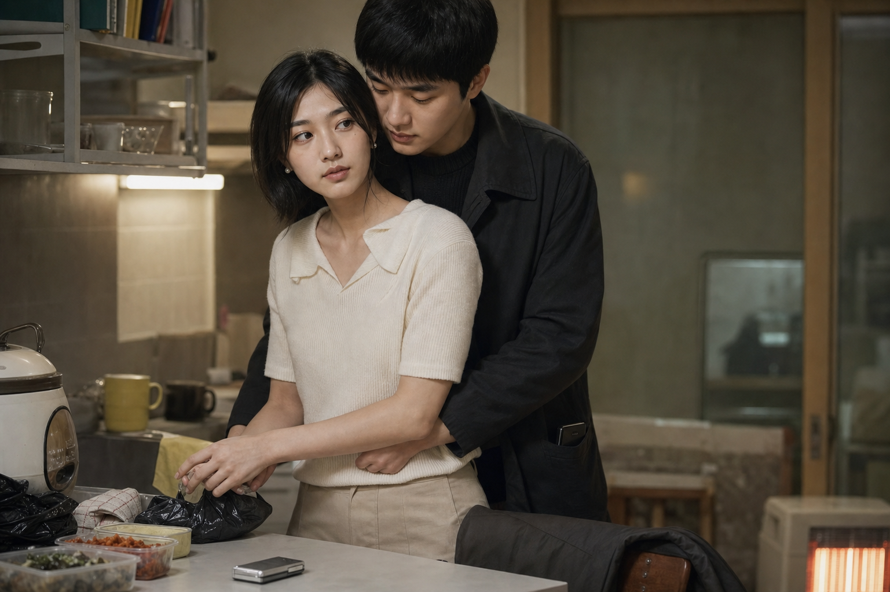

169. 두 개
3월 10일 화요일 오전, 용식의 책상 서랍 안에는 폴더폰 두 개가 나란히 놓여 있었다.
하나는 익숙한 은색이었다. 서윤과 도쿄 사진, 학원 시절 문자, 초연과 끝나기 전의 지저분한 흔적까지 모두 지나온 폰이었다. 다른 하나는 어제 저녁 수원역 근처 대리점에서 새로 개통한 검은색 폰이었다. 매끈하고 가벼웠고, 아직 손때가 없었다.
용식은 검은색 폰을 열었다 닫았다.
딸깍.
다시 열었다.
딸깍.
소리가 같아서 더 불안했다. 두 개로 나누면 안전할 줄 알았는데, 막상 나란히 두고 보니 거짓말이 두 배로 늘어난 것 같았다.
그는 새 폰 주소록 첫 줄에 정다은을 저장했다. 이름을 그대로 넣을지, 다른 이름으로 넣을지 잠깐 망설였다. 예전처럼 숨기려고 이름을 바꾸는 방식은 이미 여러 번 자신을 망쳤다. 하지만 그대로 두는 것도 위험했다.
결국 그는 `다은`이라고만 넣었다.
초연에게서 벗어난 뒤에도, 손은 여전히 숨기는 방식부터 찾고 있었다.
오전 강의가 끝나자마자 정다은에게 새 번호를 보냈다.
답장은 빨랐다.
용식은 화면을 보며 작게 웃었다. 다은은 늘 이런 식이었다. 정답을 아는 건 아닌데, 정답 가까운 곳을 발끝으로 건드렸다. 그는 새 폰을 주머니 깊이 넣고 강의실 뒤편으로 걸었다.
점심 무렵 매점 앞에서 다은이 먼저 팔을 잡았다. 사람들 앞이라 손을 빼야 했다. 그런데 빼지 않았다. 동기 몇 명이 봤고, 누군가는 바로 고개를 돌려 옆 사람에게 무언가 말했다. 정다은은 그 시선을 모르는 척했다.
[정다은] "왜 바꿨는데."
[김용식] "말했잖아. 폰이 이상하다고."
[정다은] "어제까지 멀쩡히 문자하던 폰이 오늘 갑자기?"
[김용식] "배터리도 빨리 닳고."
[정다은] "그럼 전에 번호는 버린 거야?"
용식은 아주 잠깐 늦었다.
그 늦음 하나를 정다은이 봤다.
[김용식] "응. 거의."
[정다은] "거의?"
[김용식] "아직 바꿨다고 다 말 못 해서. 한동안은 둘 다 켜 놓으려고."
완전한 거짓말은 아니었다. 그래서 더 잘 나왔다. 정다은은 고개를 기울였다. 중단발 머리가 한쪽 어깨로 쏠렸다. 그녀는 용식의 얼굴을 보며 뭔가 더 묻고 싶은 표정을 했지만, 매점 아주머니가 컵라면 물이 다 됐다고 소리치는 바람에 말이 끊겼다.
[정다은] "나한테 제일 먼저 알려 준 거야?"
용식은 이번에는 늦지 않으려 했다.
[김용식] "응."
정다은은 그 대답을 마음에 들어 했다. 사실이 아니라는 건 용식만 알았다. 서윤에게는 기존 번호를 그대로 남겨 둘 생각이었다. 번호가 바뀌었다는 말조차 하지 않을 생각이었다. 서윤은 은색 폰 안에 남아 있어야 했다. 다은은 검은색 폰 안에 들어가야 했다.
사람을 나눠 넣는다는 게 이렇게 쉬운 일처럼 보일 줄은 몰랐다.
오후에는 검은색 폰이 먼저 울렸다.
용식은 답장을 썼다.
보내려는 순간, 손에 든 폰이 은색이라는 걸 깨달았다.
심장이 덜컥 내려앉았다.
화면에는 서윤에게 보낼 문자창이 떠 있었다. 수신자 이름은 한서윤이었다. 문장 하나만 누르면, 서윤에게 `잠깐 볼래?`가 갈 뻔했다. 내용만 보면 이상하지 않을 수도 있었다. 하지만 타이밍이 문제였다. 서윤은 오늘 저녁에 용식이 오기로 한 줄 알고 있었고, 이 문자는 묘하게 다른 결을 가지고 있었다.
용식은 취소 버튼을 세게 눌렀다.
손끝에 땀이 났다.
두 개로 나누면 편해질 줄 알았는데, 손이 먼저 익숙한 쪽으로 갔다. 시스템은 사람보다 느렸다. 습관은 거짓말보다 끈질겼다.
저녁에 수원 서윤의 자취방에 도착했을 때, 방 안은 따뜻했다. 히터가 낮게 돌아가고 있었고, 싱크대 위에는 서윤이 씻어 둔 컵 두 개가 엎어져 있었다. 서윤은 머리를 대충 묶고 밥솥 앞에 서 있었다.
[한서윤] "왔어?"
[김용식] "응. 늦었지."
[한서윤] "괜찮아. 밥은 해놨어."
서윤은 그렇게 말하고도 용식의 손에 든 봉투를 봤다. 그는 반찬가게에서 산 반찬과 과일, 세제까지 꺼냈다. 낮에 다은과 손을 잡고, 새 번호를 주고, 문자 실수 직전까지 갔던 사람답지 않게 그는 너무 자연스럽게 서윤의 냉장고를 열었다.
[한서윤] "또 뭘 이렇게 많이 사 왔어."
[김용식] "있으면 먹잖아."
[한서윤] "나 진짜 너 때문에 사람 버릇 나빠진다."
[김용식] "나빠져도 돼."
말이 너무 다정하게 나갔다. 서윤이 돌아봤다. 눈빛이 살짝 풀렸다. 용식은 그 눈을 보자 갑자기 미안함이 밀려왔다. 낮에 다은에게 했던 말이 떠올랐다. 사귀자. 그리고 지금 서윤 앞에서 나온 말. 나빠져도 돼.
그는 서윤의 어깨를 뒤에서 감싸 안았다.
서윤은 놀라지 않았다. 오히려 손에 들고 있던 주걱을 내려놓고 가만히 기대왔다.
[한서윤] "왜 이래."
[김용식] "그냥."
[한서윤] "오늘 무슨 일 있었어?"
[김용식] "아니. 보고 싶어서."
거짓말을 한 날에는 이상하게 진짜 같은 말이 더 쉽게 나왔다. 들키지 않으려면 더 잘해야 했다. 더 빨리 안아야 했고, 더 오래 봐야 했고, 평소라면 지나쳤을 말도 다정하게 붙여야 했다. 용식은 그걸 계산으로 하는 것 같다가도, 서윤이 품 안에서 숨을 고르면 정말로 그녀를 놓고 싶지 않았다.

두 감정은 구분되지 않았다.
저녁을 먹는 동안 은색 폰은 방석 옆에 놓았다. 검은색 폰은 외투 안쪽 주머니에 꺼 둔 채 넣었다. 꺼 두었다고 생각했다.
그런데 설거지를 하던 중 외투 쪽에서 짧은 진동음이 났다.
한 번뿐이었다.
서윤이 고개를 돌렸다.
[한서윤] "방금 뭐 울렸어?"
용식은 물소리를 조금 세게 틀었다.
[김용식] "내 폰 아니야?"
[한서윤] "네 폰 여기 있잖아."
은색 폰은 식탁 위에 있었다.
둘 사이에 물소리만 찼다. 서윤은 의심한다기보다 이상하다는 얼굴이었다. 확정 물증도 없고, 무언가를 본 것도 아니었다. 그냥 방 안에서 낯선 소리가 한 번 난 것뿐이었다.
용식은 손에 묻은 물을 털며 웃었다.
[김용식] "아, 알람. 예전에 맞춰 둔 거. 가끔 이상하게 울려."
[한서윤] "진짜?"
[김용식] "응. 봐봐."
그는 은색 폰을 열어 아무 메뉴나 눌렀다. 서윤은 굳이 가까이 와 보지 않았다. 그게 더 미안했다. 초연이라면 확인했을 것이다. 서윤은 믿었다. 믿는 게 아니라, 믿고 싶은 사람처럼 굴었다.
[한서윤] "알았어. 설거지 내가 할게. 넌 앉아."
[김용식] "내가 해."
[한서윤] "오늘 왜 이렇게 착해."
용식은 대답하지 못했다.
밤이 깊어지자 방 안의 불을 낮췄다. 히터 소리와 창문 틈으로 들어오는 바람 소리가 섞였다. 서윤은 이불 위에 앉아 용식이 사 온 귤을 까고 있었다. 그는 옆에 앉아 그녀의 손끝에 묻은 귤 향을 맡았다. 그러다 손을 잡았다. 손등에 입술을 댔다.
서윤이 작게 웃었다.
[한서윤] "오늘 진짜 이상하다."
[김용식] "싫어?"
[한서윤] "아니."
그 말이 허락처럼 내려앉았다. 용식은 서윤의 어깨를 끌어당겼고, 서윤은 귤 껍질을 접시 위에 내려놓았다. 가까워진 거리에서 서로의 숨이 닿았다. 낮에 만든 거짓말이 아직 외투 주머니 속 검은 폰처럼 꺼지지 않은 채 남아 있었지만, 용식은 그 순간 그것까지 더 다정함으로 덮으려 했다.
서윤은 밀어내지 않았다.
방 안의 조명이 더 낮아지고, 히터 바람이 이불 끝을 천천히 흔들었다.
새벽 가까운 시간, 용식은 잠든 서윤 옆에서 눈을 떴다. 은색 폰은 머리맡에 있었다. 검은색 폰은 외투 안쪽에서 꺼져 있었다. 그는 조심스럽게 일어나 검은색 폰을 꺼냈다.
부재중 문자 하나.
용식은 답장을 쓰지 못했다. 서윤이 뒤척이는 소리에 급히 폰을 닫았다. 딸깍, 소리가 작게 났다.
서윤은 깨지 않았다.
용식은 그제야 숨을 쉬었다.
아침이 오기 전, 그는 또 다른 예약을 했다. 휴대폰 화면이 아니라, 은색 폰 인터넷 즐겨찾기 속 수입차 딜러 연락처였다. 파란색 7시리즈 매물이 하나 눈에 들어왔다.
관리하려면 더 잘 숨겨야 했다.
이상하게도 그는 숨기는 대신, 더 눈에 띄는 것을 고르고 있었다.
### 삽화 후보
- 서랍 속 은색 폴더폰과 검은색 폴더폰이 나란히 놓인 장면. 두 세계를 물건으로 보여 주는 정물 구도.
- 서윤의 자취방에서 용식이 뒤에서 서윤을 안고, 식탁 위 은색 폰과 외투 주머니 속 검은 폰이 대비되는 장면.